ROMANIA IN WORLD WAR II
A PACT WITH THE DEVIL AGAINST HIS BROTHER
Following the
German-Soviet non-aggression pact of August 23, 1939 and the French
capitulation in June 1940, the French-British guarantee for Romania's
territorial integrity from April 1939 had little value. A Soviet ultimatum
on June 26, 1940 forced the Romanian to surrender Northern Bucovina and
Bessarabia. This ultimatum was the result of a secret clause of the
Ribbentrop-Molotov pact (that included the splitting of a part of Europe
between Germany and USSR) and allowed the advance of the Soviet troops till
the river Prut.
On 30th August 1940 most of Transylvania had to be ceded to
Hungary by German orders, and finally after negotiations with Bulgaria, the
treaty of Craivora Sept. 7, 1940 made Romania return Southern Dobrudja. This
way Romania lost in about two months a third of its national territory,
constituted in 1918. King
Carol II got the blame for these disasters and was forced to abdicate. His
son Michael was once more proclaimed King of Romania.
The pro-German general Ion Antonescu formed a Government with representatives for the Iron Guard (Romanian fascist movement), and German troops were stationed in the country. Without abolishing the monarchy, he ruled the country as a dictator and joined Germany in the war against the Soviet Union, in order to recover the lost provinces.
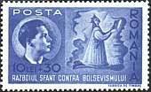 |
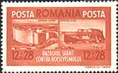 |
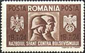 |
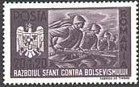 |
The set presented above was issued on 11th October 1941 and it was dedicated to the so called brotherhood in arms between the Romanian and German troops. All stamps display on the bottom the text: "The holy war against the bolshevism". The very high surtax was destined to finance the Anti-Bolshevism crusade. Point on the stamps with the mouse index for more information.
|
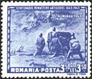 |
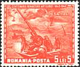 |
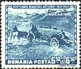 |
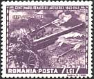 |
In the beginning of the war Romania again secured Bessarabia, Bucovina and even more - "Transnistria" - between the rivers Dniestr and Bug. As the war developed, however, the Romanian army suffered serious defeats, among others in the battle of Stalingrad. The set shown above is dedicated to the Centenary of Romanian Artillery and displays scenes of battles for Stalingrad (1943), Odessa (1941), Caucasus (1942) and Sevastopol (1942).
|
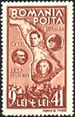 |
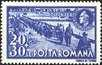 |
 |
The set shown above is the most interesting of all, being very explicit. It appeared on the first of November 1942 and commemorates the first anniversary of the liberation of Bessarabia. All stamps display the text: "One year since emancipation". The first stamp, Sc. B195, shows the King Michael, Antonescu, Hitler and Mussolini, and the map of Bessarabia in the background. On the second stamp (Sc. B197) the Romanian troops are crossing the Prut River to Retake Bessarabia. On the third stamp (Sc. B196) are shown the King Michael and the Marshal Antonescu. A dictatorship replaced another one, and, despite the changes, the situation won't improve in the future...
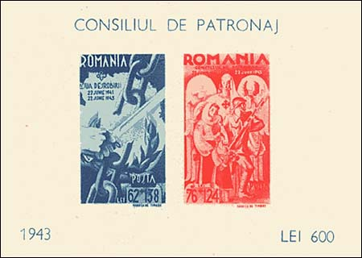
War means, of course, casualties. Consiliul de Patronaj (1942 - 1944) was an official government charity in WW2, under the patronage first of the Queen Mother and later the president was the wife of Marshal Antonescu. It issued official charity stamps, that were often used on documents together with normal revenues. On 29/10/1944 Consiliul de Patronaj changed its name to Liga operelor sociale, and stopped its activities as a result of the changed political situation. The above sheet was issued on June 22, 1943, together with a set of three stamps (not shown). The print run was of 50,000 blocks. It was postally valid only during a month.
Created:
08/31/01. Revised:
08/20/03. |
↑